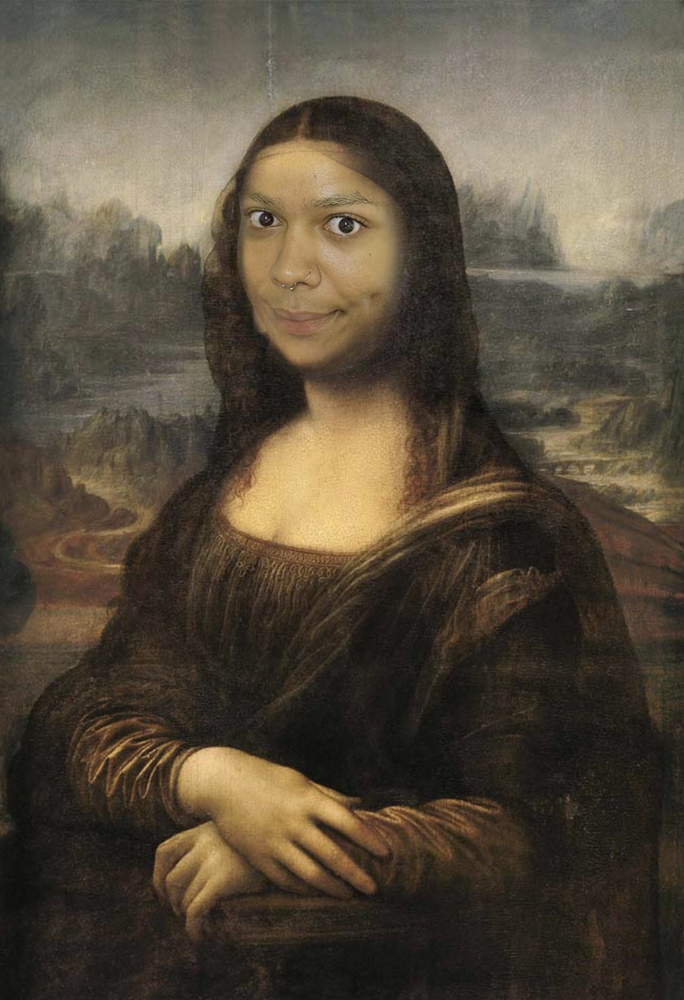

4. The Berty-gene is the most talk about topic in art due to Leornado Da Vinci. He wrote a series of scrolls entailing the secrets of the Berty-gene and its mysteries of 'YASS'. One of his most famous and recognized painting is the "Bertnalisa" and her mystifying gaze.
MY LIFE IS A LIE!! NEXTTTT